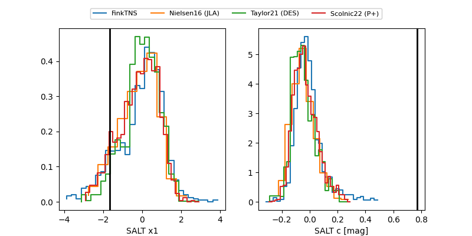

TNS: 2025wsm
YSE: 2025wsm
2025wsm (yse,tns)
PS25hhm (panstarrs)
equatorial (ra, dec) = (7.7354,+17.39992)
galactic (l, b) = (115.9855,-45.19520)

last ps1::i=20.58, ps1::r=20.11, ps1::z=20.40
2 ps1::i, 3 ps1::r, 1 ps1::z detections